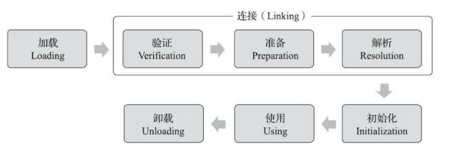

这篇文章我们来了解Java虚拟机中类加载的全过程，即加载、验证、准备、解析和初始化这五个阶段所执行的具体动作。
Java虚拟机把描述类的数据从Class文件加载到内存，并对数据进行校验、转换解析和初始化，最终形成可以被虚拟机直接使用的Java类型，这个过程被称作虚拟机的类加载机制。与那些在编译时需要进行连接的语言不同，在Java语言里面，类型的加载、连接和初始化过程都是在程序运行期间完成的。这种策略让Java语言进行提前编译会面临额外的困难，也会让类加载时稍微增加一些性能开销，但是却为Java应用提供了极高的扩展性和灵活性。
1. 类加载的时机
一个类型从被加载到虚拟机内存中开始，到卸载出内存为止，它的整个生命周期将会经历加载(Loading)、验证(Verification)、准备(Preparation)、解析(Resolution)、初始化(Initialization)、使用(Using)和卸载(Unloading)七个阶段，其中验证、准备、解析三个部分统称为连接(Linking)。这七个阶段的发生顺序如图：

图中，加载、验证、准备、初始化和卸载这五个阶段的顺序是确定的，类型的加载过程必须按照这个顺序按部就班地开始，而解析阶段则不一定：它在某些情况下可以在初始化阶段之后再开始，这就是为了支持Java语言的运行时绑定特性(也称为动态绑定或晚期绑定)。请注意，这里写的是按部就班的开始，而不是按部就班地进行或者按部就班地完成，强调这点是因为这些阶段通常都是互相交叉地混合进行的，会在一个阶段执行的过程中调用、激活另一个阶段。关于在什么情况下需要开始类加载过程的第一个阶段“加载”，《Java虚拟机规范》中并没有进行强制约束，这点可以交给虚拟机的具体实现来自有把握。但是对于初始化阶段，《Java虚拟机规范》则是严格规定了有且只有六种情况必须立即对类进行“初始化”(而加载、验证、准备自然需要在此之前)：
1）遇到new、getstatic、putstatic或者invokestatic这四条字节码指令时，如果类型没有进行过初始化，则需要先触发其初始化阶段。能够生成这四条指令的典型Java代码场景有：
- 使用new关键字实例化对象的时候
- 读取或设置一个类型的静态字段(被
final修饰、已在编译期把结果放入常量池的静态字段除外)的时候 - 调用一个类型的静态方法的时候
2）使用java.lang.reflect包的方法对类型进行反射调用的时候，如果类型没有进行过初始化，则需要先触发其初始化。
3）当初始化类的时候，如果发现父类还没有进行过初始化，则需要先触发其父类的初始化。
4）当虚拟机启动时，用户需要指定一个要执行的主类(包含main方法的那个类)，虚拟机会先初始化这个主类。
5）当使用JDK7新加入的动态语言支持时，如果一个java.lang.invoke.MethodHandle实例最后的解析结果为REF_getStatic、REF_putStatic、REF_invokeStatic、REF_newInvokeSpecial四种类型的方法句柄，并且这个方法句柄对应的类没有进行过初始化，则需要先触发其初始化。
6）当一个接口中定义了JDK8新加入的默认方法(被default关键字修饰的接口方法)时，如果有这个接口的实现类发生了初始化，那该接口要在其之前被初始化。
2. 类的加载过程
加载
“加载”(Loading)阶段是整个“类加载”(Class Loading)过程中的一个阶段，不要混淆这两个看起来很相似的名词。在加载阶段，Java虚拟机需要完成以下三件事：
- 通过一个类的全限定名来获取定义此类的二进制字节流
- 将这个字节流所代表的静态存储结构转化为方法区的运行时数据结构
- 在内存中生成一个代表这个类的
java.lang.Class对象，作为方法区这个类的各种数据的访问入口
相对于类加载过程的其他阶段，非数组类型的加载阶段(准确地说，是加载阶段中获取类的二进制字节流的动作)是开发人员可控性最强的阶段。加载阶段既可以使用Java虚拟机里内置的引导类加载器来完成，也可以由用户自定义类加载器去完成。对于数组类而言，情况就有所不同，数组类本身不通过类加载器创建，它是由Java虚拟机直接在内存中动态构造出来的。但数组类与类加载器仍然有很密切的关系，因为数组类的元素类型最终还是要靠类加载器来完成加载。
验证
验证是连接阶段的第一步，这一阶段的目的是确保Class文件的字节流中包含的信息符合《Java虚拟机规范》的全部约束要求，保证这些信息被当做代码运行后不会危害虚拟机自身的安全。
验证阶段大致上会完成下面四个阶段的检验动作：文件格式验证、元数据验证、字节码验证和符号引用验证：
文件格式验证：第一阶段要验证字节流是否符合
Class文件格式的规范，并且能被当前版本的虚拟机处理。这一阶段可能包括下面这些验证点：- 是否以魔数
0xCAFEBABE开头 - 主次版本号是否在当前
Java虚拟机接受范围之内 - 常量池的常量中是否有不被支持的常量类型
- 指向常量的各种索引值中是否有指向不存在的常量或不符合类型的常量
…
实际上第一阶段的验证点还远不止这些，上面所列的只是从
HotSpot虚拟机源码中摘抄的一小部分内容。这个阶段的验证是基于二进制字节流进行的，只有通过了这个阶段的验证之后，这段字节流才被允许进入Java虚拟机内存中的方法区中进行存储，所以后面的三个验证阶段全部是基于方法区的存储结构上进行的，不会再直接读取、操作字节流了。- 是否以魔数
元数据验证：第二阶段是对字节码描述的信息进行语义分析，以保证其描述的信息符合《Java语言规范》的要求，这个阶段可能包括的验证点如下：
- 这个类是否有父类
- 这个类的父类是否继承了不允许继承的类(被final修饰的类)
- 如果这个类不是抽象类，是否实现了其父类或接口之中要求实现的所有方法
…
第二阶段的主要目的是对类的元数据信息进行语义校验，保证不存在与《Java语言规范》定义相悖的元数据信息
字节码验证：第三个阶段是整个验证过程中最复杂的一个阶段，主要目的是通过数据流分析和控制流分析，确定程序语义是合法的、符合逻辑的。在第二阶段对元数据信息中的数据类型校验完毕后，这阶段就要对类的方法体进行校验分析，保证被校验类的方法在运行时不会做出危害虚拟机安全的行为。
符号引用验证：最后一个阶段的校验行为发生在虚拟机将符号引用直接转化为直接饮用的时候，这个转化动作将在连接的第三阶段—-解析阶段中发生。符号引用验证可以看作是对类自身以外(常量池中的各种符号引用)的各类信息进行匹配性校验，通俗来说是，该类是否缺少或者被禁止访问它依赖的某些外部类、方法、字段等资源。本阶段通常需要校验下列内容：
- 符号引用中通过字符串描述的全限定名是否能找到对应的类
- 在指定类中是否存在符合方法的字段描述符及简单名称所描述的方法和字段
- 符号引用中的类、字段、方法的可访问性是否可被当前类访问
…
验证阶段对于虚拟机的类加载机制来说，是一个非常重要、但却不是必须要执行的阶段，因为验证阶段只有通过或者不通过的差别，只要通过了验证，其后就对程序运行期没有任何影响了。如果程序的全部代码已经被反复使用和验证过，在生产环境的实施阶段就可以考虑使用-Xverify:none参数来关闭大部分的类验证措施，以缩短虚拟机类加载的时间。
准备
准备阶段是正式为类中定义的变量(即静态变量，被static修饰的变量)分配内存并设置类变量初始值的阶段，从概念上讲，这些变量所使用的内存都应当在方法区中进行分配，但必须注意到方法区本身是一个逻辑上的区域，在JDK7及之前，HotSpot使用永久代来实现方法区时，实现是完全符合这种逻辑概念的；而在JDK8及之后，类变量则会随着Class对象一起存放在Java堆中，这时候“类变量在方法区”就完全是一种对逻辑概念的表述了。
关于准备阶段，还有两个容易产生混淆的概念需要这种强调，首先是这时候进行内存分配的仅包括类变量，而不包括实例变量，实例变量将会在对象实例化时随着对象一起分配在Java堆中。
假设一个类变量的定义为：
public static int value = 123;
那变量value在准备阶段过后的初始值为0而不是123，因为这时尚未执行任何Java方法，而把value赋值为123的putstatic指令是程序被编译后，存放于类构造器<clinit>()方法之中，所以把value赋值为123的动作要到类的初始化阶段才会被执行。
如果类字段的字段属性表中存在Constant Value属性，那在准备阶段变量值就会被初始化为Constant Value属性所指定的初始值，假设上面类变量value的定义修改为：
public static final int value = 123;
编译时Javac将会为value生成Constant Value属性，在准备阶段虚拟机就会根据Constant Value的设置将value赋值为123。
解析
解析阶段是Java虚拟机将常量池内的符号引用替换为直接引用的过程。
符号引用：符号引用以一组符号来描述所引用的目标，符号可以是任何形式的字面量，只要使用时能无歧义地定位到目标即可。
直接应用：直接引用是可以直接指向目标的指针、相对偏移量或者是一个能间接定位到目标的句柄。
解析动作主要针对类或接口、字段、类方法、接口方法、方法类型、方法句柄和调用点限定符这7类符号引用。
初始化
初始化阶段，Java虚拟机才真正开始执行类中编写的Java程序代码，将主导权移交给应用程序。
进行准备阶段时，变量已经赋过一次系统要求的初始零值，而在初始化阶段，则会根据程序员通过程序编码制定的主观计划去初始化类变量和其他资源。我们也可以从另外一种更直接的形式来表达：初始化阶段就是执行类构造器<clinit>()方法的过程。<clinit>()并不是程序员在Java代码中直接编写的方法，它是Javac编译器的自动生成物。
<clinit>()方法是由编译器自动收集类中的所有类变量的赋值动作和静态语句块中的语句合并产生的，编译器收集的顺序是由语句在源文件中出现的顺序决定的，静态语句块中只能访问到定义在静态语句块之前的变量，定义在它之后的变量，在前面的静态语句可以赋值，但是不能访问。
<clinit>()方法与类的构造函数不同，他不需要显式地调用父类构造器，Java虚拟机会保证在子类的<clinit>()方法执行前，父类的<clinit>()方法已经执行完毕。